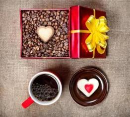

Подарунки кавоману

- Що ж подарувати кавоману?
- Книги про каву, способах його приготування, секрети майстерності. Наприклад, це може бути книга про мистецтво латте-арт.
- Посуд та техніка для приготування кави: турка, френч-прес, млин для кави і т. д.
- Посуд для сервірування кави. Крім класичної посуду для подачі кави існують оригінальні чашки або молочники, які не тільки служать за своїм прямим призначенням, але і піднімають настрій і примушують посміхнутися. Особливої уваги заслуговує посуд з кераміки ручної роботи і антикварний фарфор.
- Кавові машини, або кавоварки.
- Кава. Хороша кава — чудовий подарунок! Не помилитися з вибором кави в зернах.
- Сиропи для кави. Не секрет, що сиропи додають до кави для надання їй особливого смаку.
- Кавовий тур. Незабутня подорож у країну, де вирощують улюблений напій. Таке невелике пригода запам'ятається надовго і можливо стане кращим подарунком.
- Ємкості для зберігання кави.
- Оригінальні подарунки та сувеніри з кавової тематикою.